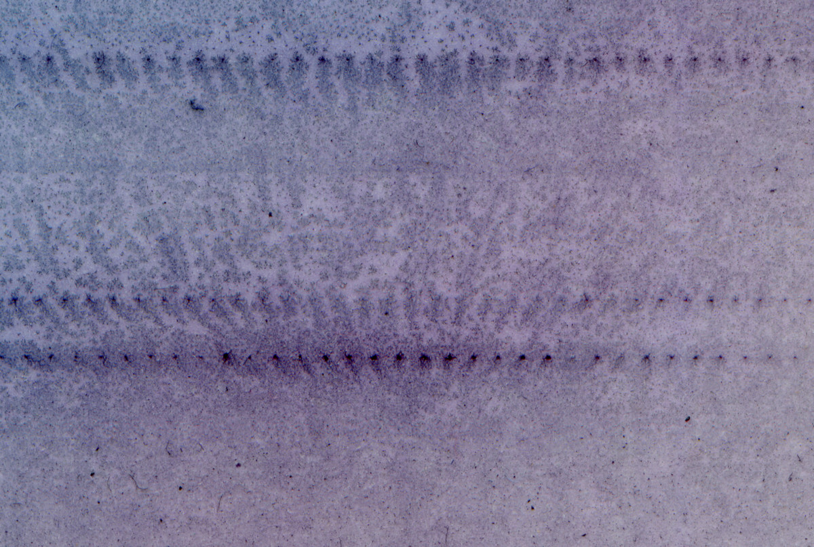

Stu Sontier is an experimental photographer working across analogue and digital fields. His work is concerned with photographic materiality, failing technology and compromised ecologies.
This site collects digital works that are shown as cleanNFTs (using the Tezos coin) on hicetnunc.xyz
View the primary collection here.

untitled failed print with printer wheel strike 2019
{% include info-primary.html %}